Kill Team · Battle report 01
Shadows over Nachmund
At a plasma generator farm in Nachmund, Aster Vale’s Veiled Hand face fourteen of the Tamer’s creations. Both sides need the generators intact. Only one can control them.
A narrative reconstruction using our battle photographs and campaign background. The individual actions below are dramatised; turn numbers and dice results are not assigned. The recorded result is a 10–4 Sisters of Silence victory.
The mission
Power worth taking
The maintenance crews stopped answering first. Then came the fault reports: failing systems that still registered full output, shutdown warnings from generators that continued feeding the grid. Someone was inside the farm, and the instruments could no longer be trusted.
For Aster Vale, the assignment was an extraction becoming a containment operation. Find the missing workers, recover the controls and keep power flowing to the nearby settlements. Shade al Serrion—the Warden—had sent ten Sisters because losing the site to an indiscriminate bombardment would accomplish the enemy’s work for them.
Vasarius Biolex had reached the same conclusion for different reasons. Beneath a neighbouring industrial complex, his concealed brood-conditioning facility needed more power: enough for growth chambers, containment systems and the equipment through which the Tamer imposed his will. Capturing the farm would let him divert its output and conceal the theft behind falsified records.
His assault force carried a demanding restriction. They were to kill the defenders, seize the access routes and leave the machinery untouched. The attack would test whether his creations could obey that distinction once prey was within reach.
The opposing forces
The Veiled Hand and the Tamer’s brood
Aster’s Sisters had learned their trade recovering people whom nobody else could reach: missing null children, compromised agents and survivors trapped behind hostile lines. Kess had forged them into a formation whose members could trust one another’s movements and null discipline. Their silence carried orders, corrections and reassurance without a spoken word.
Across the field were fourteen Hormagaunts, designated VB–PG–01 through VB–PG–14. Their assigned tasks divided the brood into four groups. Whether they could preserve that organisation under fire was part of Biolex’s experiment.
The Veiled Hand · ten Sisters
- Aster Vale Squad leader
- Shade al Serrion’s step-daughter. Leads through clear intent and trusts her Sisters to act without waiting for every instruction.
- Kess Second-in-command
- The squad’s exacting instructor, responsible for formation discipline and the control of their overlapping null fields.
- Ylena Newly sworn Sister
- Determined to prove dependable under pressure. Her mother Tina and sister Rita remain the reason she fights.
- Ves Mentor and battlefield partner
- Ylena’s steadying presence: quick to recognise distress and answer it with a touch or a brief sign.
- Irena Voss Marksman
- A patient former industrial watchkeeper with an eye for rooflines, windows and changes in movement.
- Talia Rook Scout
- A colony-ship passage worker turned scout, inclined to take an opening before support has caught up.
- Nera Venn Breaching specialist
- Methodical with locks, doors and charges; trusted to work carefully while everyone else wants haste.
- Sabine Orrel Close-assault specialist
- An experienced swordswoman whose determination to finish a fight sometimes makes withdrawal the harder order.
- Elin Sorn Field medic
- Knows each Sister’s limits and refuses to let an easily concealed wound become an avoidable death.
- Daria Holt Rear guard and extraction security
- A former convoy escort who checks the exits on arrival and keeps counting Sisters until the ramp closes.
This engagement takes place before Ves’s death in the later colony-defence story.
Biolex’s brood · operational designations
- VB–PG–01, 02, 03, 04 · Infiltration
- Find a route through the perimeter and locate the generator controls.
- VB–PG–05, 06, 07, 08 · Elevated assault
- Clear defenders from the positions overlooking the approach.
- VB–PG–09, 10, 11, 12 · Compound seizure
- Penetrate the defended compound and secure its access routes.
- VB–PG–13, 14 · Interception
- Cut off reinforcements and prevent escape, alarm or a shutdown of the farm.
Deployment
Two bunkers and a narrow yard
Aster chose the bunker compound as her defensive position. Its two roofs offered sightlines across the perimeter, while the yard below gave the Sisters room to support either building. Beyond the long dividing wall stood five plasma generators, enough cover to conceal an approach almost to the edge of the compound.

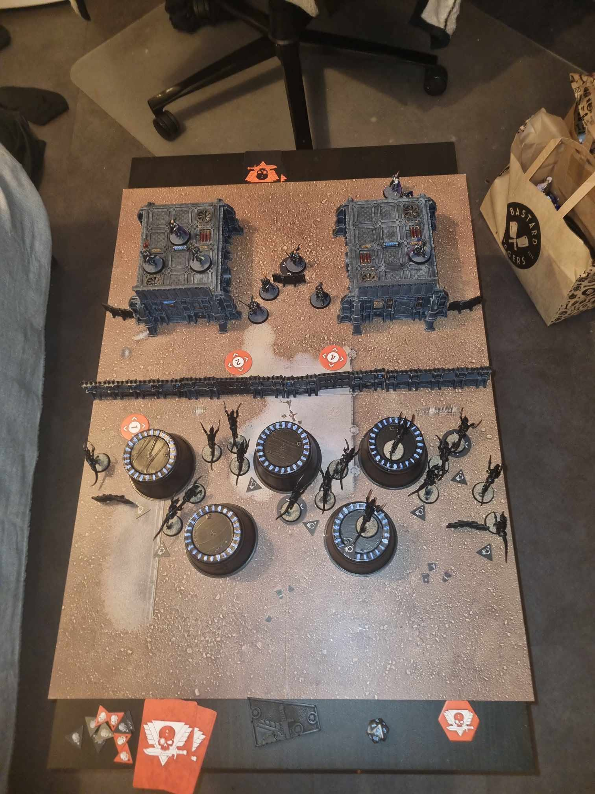
Irena settled into overwatch while Kess checked the spacing of the defenders. Ylena took her place with Ves nearby. At ground level, Aster kept Sisters available to meet a breach rather than committing everyone to the roofs. Daria marked the way out; Nera studied the access points. The farm had to remain usable when the shooting stopped.
For the brood, the generators offered a covered assembly area and several elevated starting points. There were fourteen bodies against ten, but the wall and bunker approaches would make it difficult to bring that advantage to bear all at once. Biolex needed his creatures to reach the defenders before those defenders could thin them out.

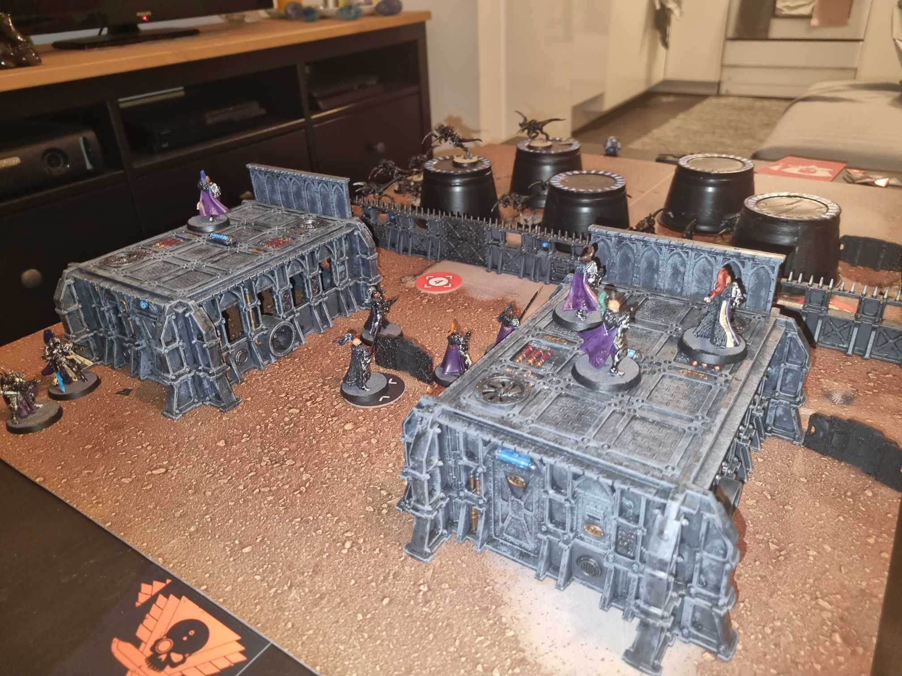

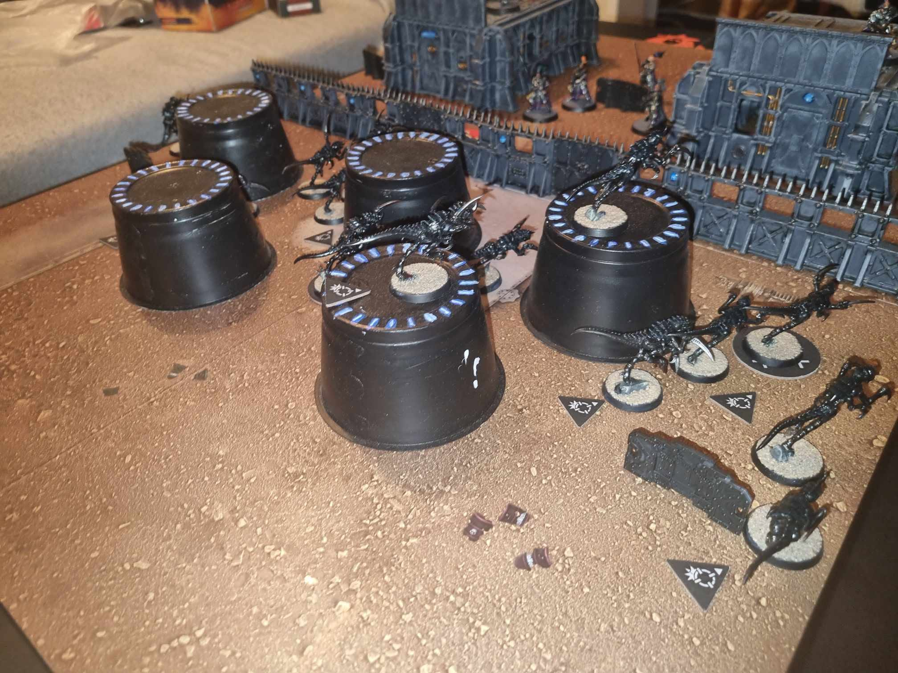
At the table · Security Tac Ops
Hold the Line, Protect Assets and Central Control appear in the battle record. They fit the defence of the farm; their individual scoring is not reconstructed here.

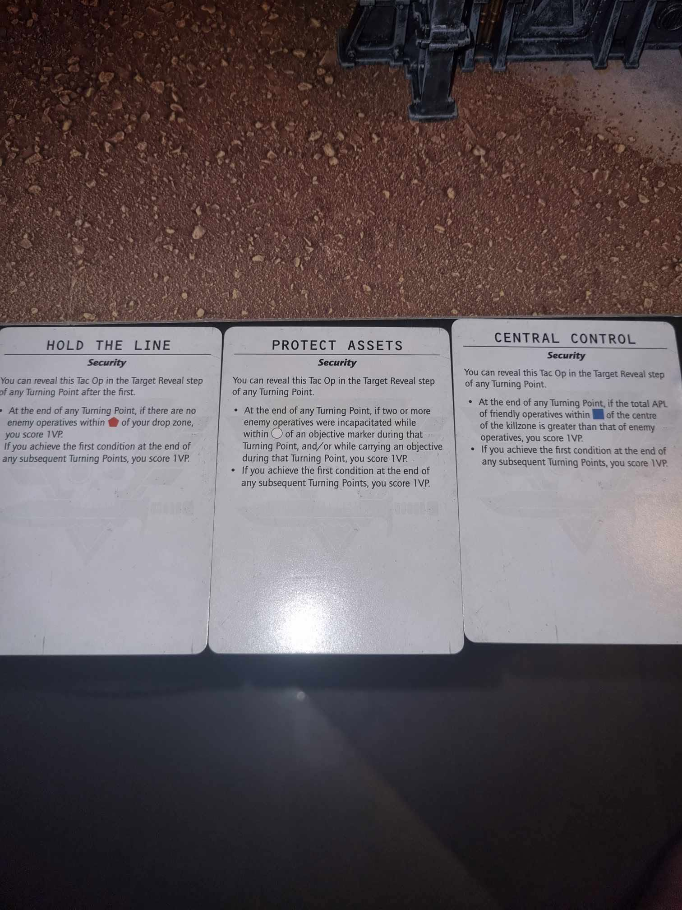
The opening exchange
Through the generator field
The first creatures came between the black generator housings, breaking their outlines against the equipment. The Sisters had height, but the cylinders repeatedly interrupted their view. A clear lane could vanish with a few steps sideways; a target that had disappeared behind one housing could emerge much closer at the next.
Aster held the position. Chasing into the farm would sacrifice the bunker sightlines and spread her ten Sisters across too much ground. She needed the brood to cross the last exposed approaches while the defenders could still support one another.
The Hormagaunts kept coming towards the wall. Their restraint around the generators mattered: there was no attempt to cripple the machinery or force the defenders out through a cascading failure. Whatever else Biolex had done to them, the instruction to preserve his prize was holding.


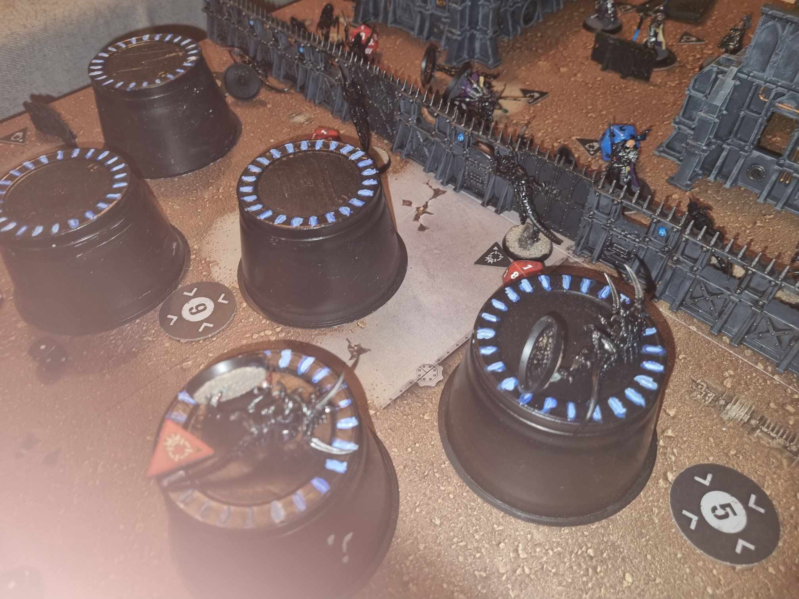
Contact
The wall becomes the front line
At the perimeter, the fight contracted sharply. The distance that had favoured the Sisters was almost gone. Claws appeared above the wall; black bodies gathered opposite the spaces between the bunkers. The defenders could no longer concentrate solely on the approach. They had to watch the ground immediately beneath them.

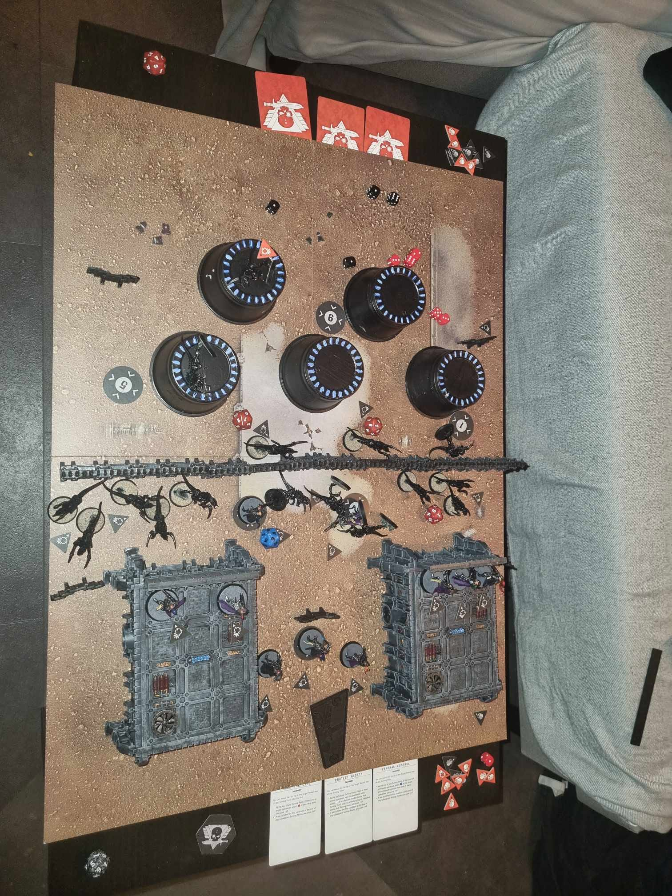
Kess kept the formation from dissolving into separate duels. Ylena’s instinct was to turn towards every new movement, until Ves’s hand found her arm and a short sign returned her attention to her own sector. There were enough enemies for every Sister. Abandoning one angle to help at another would give the brood the opening it needed.
Aster brought her ground-level reserve towards the threatened yard. Sabine now had the sort of fight she preferred, close enough to meet with a blade, but with little room to pursue. Elin stayed within reach of the defenders while Daria watched the route behind them. A successful breach could threaten the controls and their extraction in the same movement.

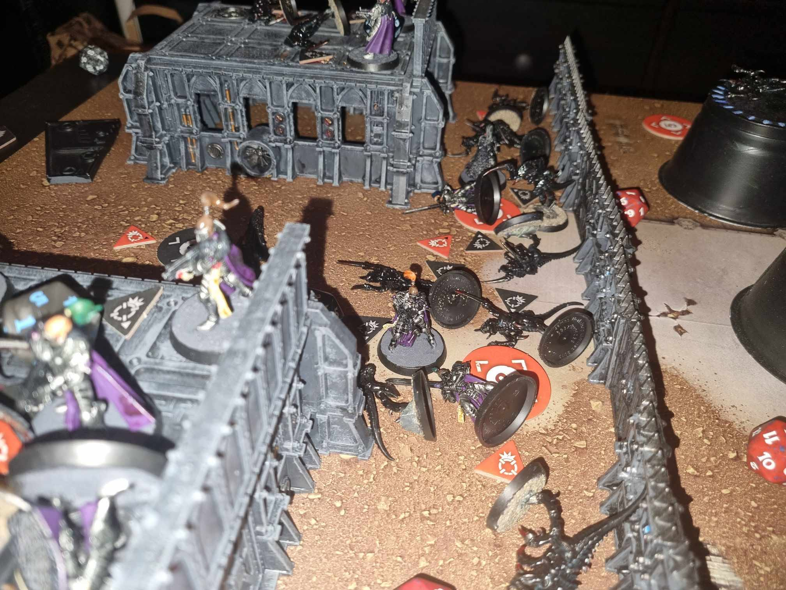
The critical fight
Claws on the rooftops
The bunker roofs had given the Sisters their best observation positions. Now the brood reached them. A Hormagaunt among the purple cloaks changed the value of the high ground immediately: the defenders had to turn inward to survive, and every Sister occupied at close quarters was one fewer watching the approach.

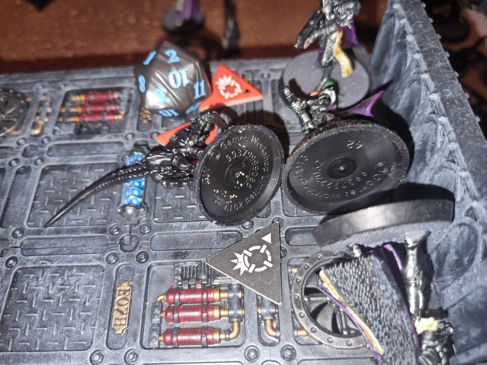
This was the purpose of Biolex’s elevated-assault group. His creatures did not need to destroy a bunker. Getting onto it was enough to pull the defence in two directions. Below, other organisms pressed towards the yard; above, the Sisters had to make room to fight without leaving one another exposed.
Aster’s problem was no longer simply holding the perimeter. It was keeping the rooftop fights connected to the ground-level defence. She signalled for the Sisters to support the nearest threatened position and resist the temptation to follow a withdrawing creature beyond that support. Biolex had bodies to spend drawing them apart. She did not.

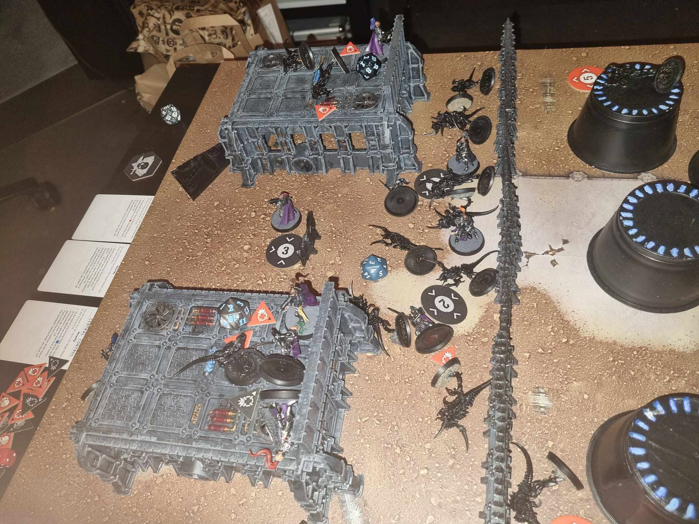

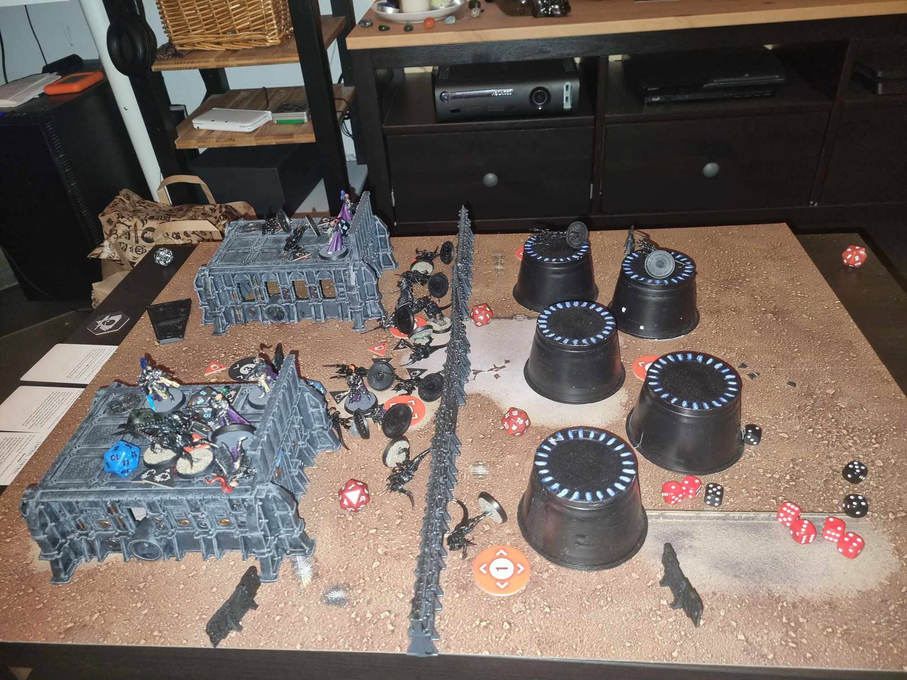
After-action assessment
A fight for the controls
The struggle around the bunkers explains the battle’s central tension. The Sisters’ initial position offered height and mutual support, but the narrow yard gave them little depth once the brood arrived. For the Hormagaunts, closing the distance brought the fight they wanted, while concentrating them around the same limited approaches.

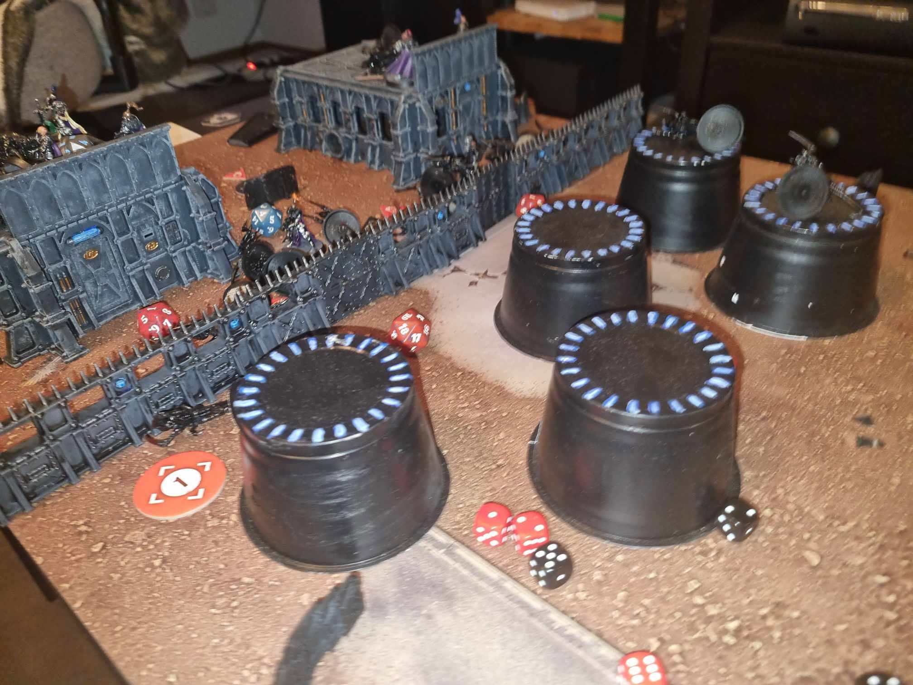
Both commanders had committed to taking possession of a working site. Aster could not trade the settlements’ power supply for an easier defence. Biolex could not feed his hidden facility with a ruined generator farm. That shared restriction brought their forces into close combat around the positions from which the farm could be held.
For the Veiled Hand, the test was whether ten Sisters could remain a squad while fighting on several levels at once. For the Tamer, it was whether fourteen engineered predators could capture something more useful than a field of corpses.
Final score: Sisters of Silence 10 – Tyranids 4. Victory to Aster Vale and the Veiled Hand.
The Veiled Hand’s defence ended in victory. Despite pressure at the wall and on the bunker roofs, Aster’s ten Sisters won the battle for the farm’s objectives and denied Biolex the victory he sought. For the Warden’s retinue, Shadows over Nachmund would be remembered as a successful defence under pressure from several directions.
From the battle record
Click any photograph to view it full size.
Additional battlefield views

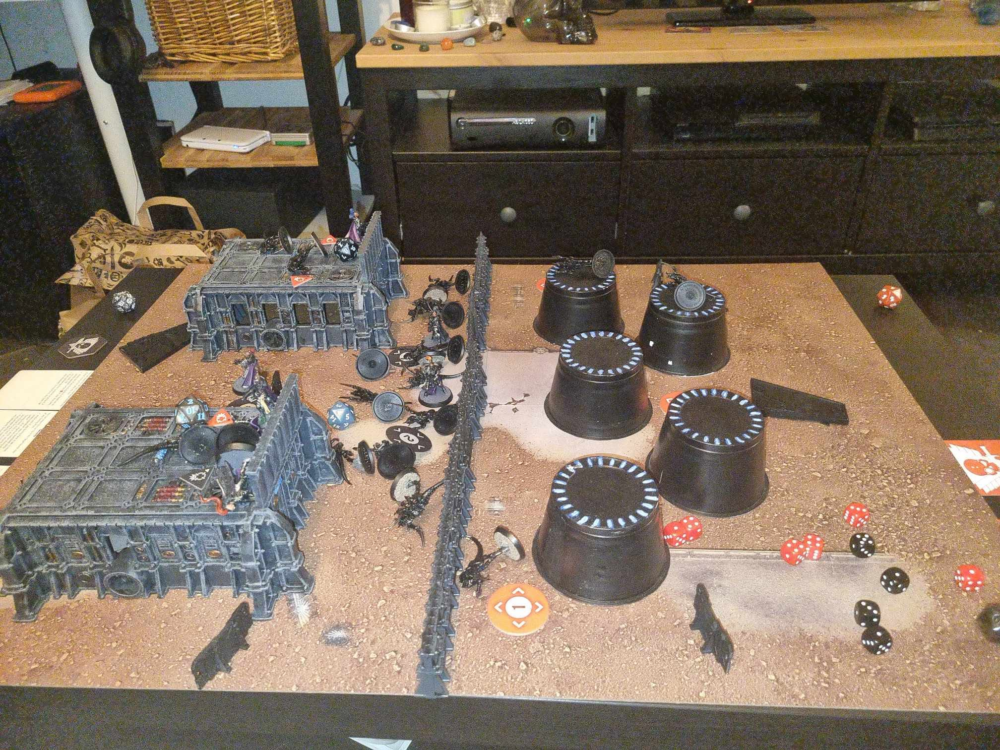

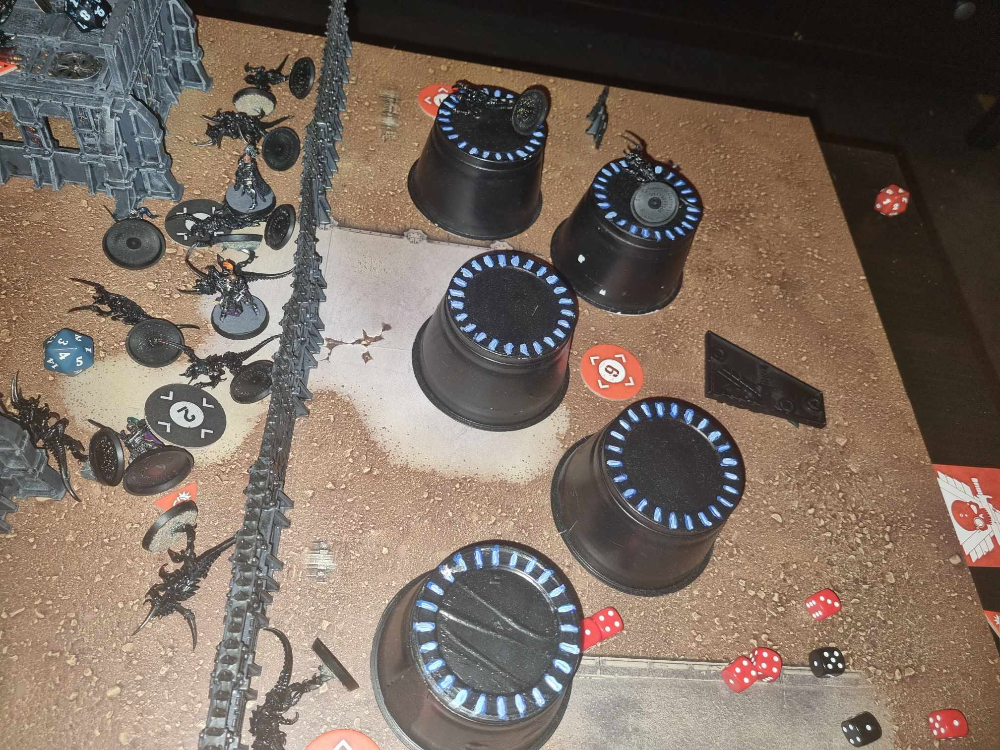

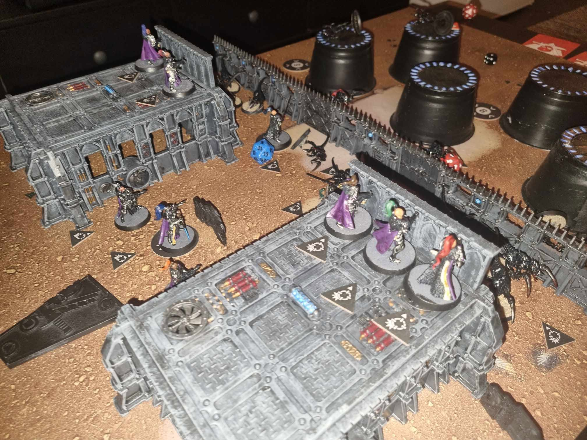
Behind the battlefield · terrain photographs
The generator models and a separate terrain layout from the same photo collection. The alternate layout is included here rather than used to reconstruct this engagement.


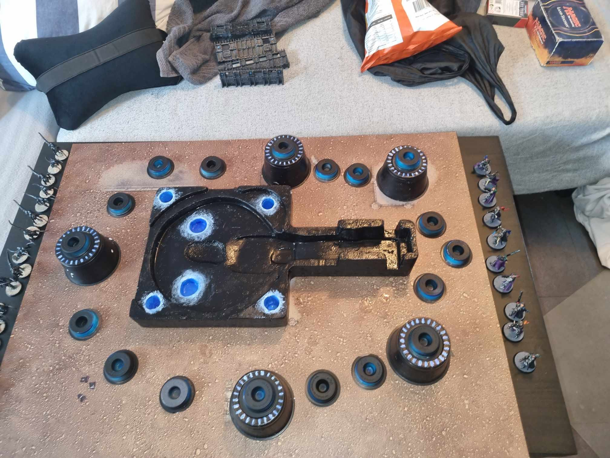